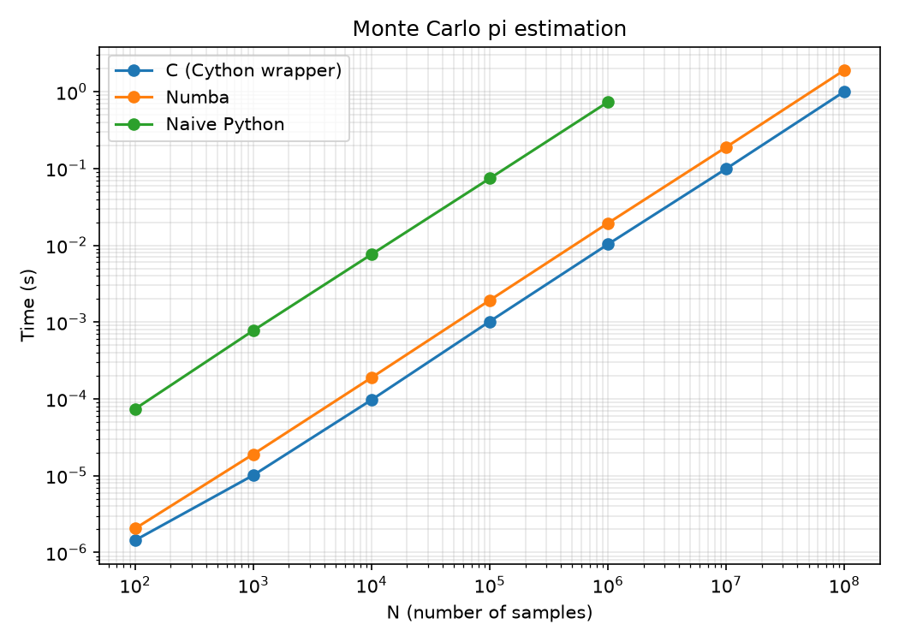
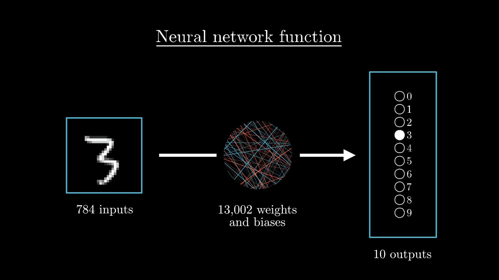
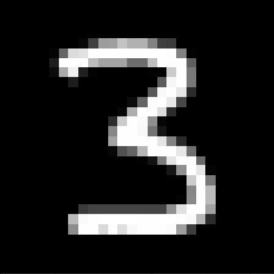
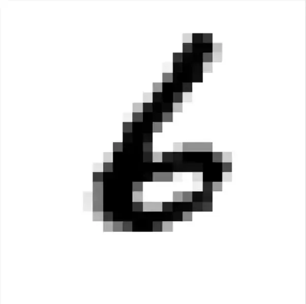
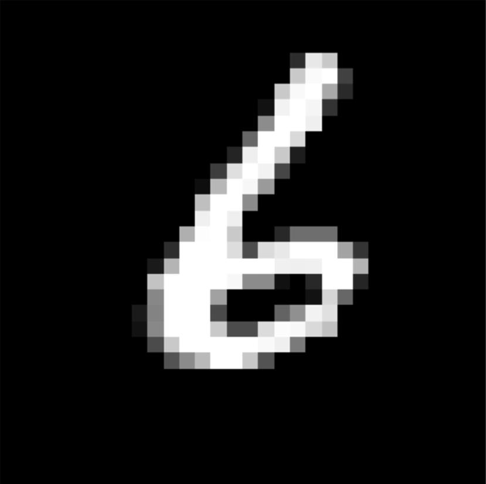
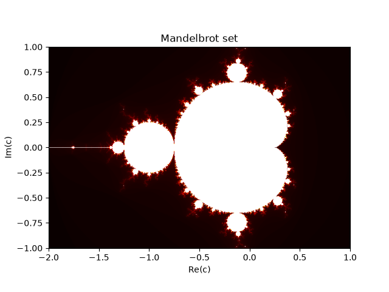

Python bindings
Speeding up Python
- Python: great for prototyping, but can be slow (e.g. loops):
- Every operation is interpreted
- Works on generic Python objects
- C: fast, but less convenient for plotting, data analysis, …
- Best of both worlds:
- use Python as the “glue” code
- do heavy computational lifting in compiled code
Options to speed up Python
- Use existing Python packages:
- NumPy/SciPy: many mathematical operations with good performance
- Use a Python compiler:
- Numba compiles Python into machine code just-in-time
- Write your own (C) library:
- Use
ctypesto load it into Python - Cython: generate bindings semi-automatically
- pybind11, SWIG, CFFI: similar purpose as Cython
- Use
Numba
- Numba: compiles Python to machine code (on first call)
- You add a decorator, the function body stays Python
from numba import jit
@jit(nopython=True)
def estimate_pi_numba(N):
hits = 0
for i in range(N):
x = np.random.rand(2)
if x[0] * x[0] + x[1] * x[1] < 1.0:
hits += 1
return 4.0 * hits / N- Only supports a subset of Python and NumPy
- Offers automatic parallelization
Calling C from Python
- Implement computationally intensive functions in C
- Call from Python: requires bindings to translate
- Tools to generate or write them:
ctypes: part of the Python standard library, no compilation of bindings, but you declare all types by hand- pybind11: convenient, targets C++
- Cython: C-extensions for Python, turns Python-like code into C
In this course we use Cython: the syntax is close to Python, and it works well with plain C.
Cython: basic philosophy
.pyxfile:- Python syntax with C type declarations
cdef extern from: use functions from C header file- write a small Python function that calls the C function
- Cython: translates to C, compiles to Python extension module
importthe module like any other Python module
_mc_pi.pyx --cython--> _mc_pi.c --gcc--> _mc_pi.soCython in practice: the C code
We start from the Monte Carlo estimate of \(\pi\) in C (mc_pi.c), with its header (mc_pi.h)
double estimate_pi(unsigned long N);#include <math.h>
#include <stdlib.h>
double get_random_double() {
// Get a random double in [0, 1]
int x = rand();
return (double) x / RAND_MAX;
}
double estimate_pi(unsigned long N) {
double x, y;
unsigned long hits = 0;
// This can be used to seed the random number generator
srand(0);
for (unsigned long i = 0; i < N; i++) {
x = get_random_double();
y = get_random_double();
if ( x*x + y*y < 1 ) {
hits++;
}
}
return 4.0 * hits / N;
}Cython in practice: the wrapper
_mc_pi.pyx:
""" Example of wrapping a C function"""
# Declare the C function of interest
cdef extern from "mc_pi.h":
# Function name for Cython followed by real C name
double c_estimate_pi "estimate_pi"(unsigned long N)
# Function that will be visible in other Python code
def estimate_pi(unsigned long N):
return c_estimate_pi(N)Python and C function share the same name, not necessarily a good practice.
Cython in practice: building
setup.py: describes the extension module
from setuptools import setup, Extension
from Cython.Build import cythonize
extensions = [
Extension(
"_mc_pi",
sources=["_mc_pi.pyx", "mc_pi.c"],
)
]
setup(ext_modules=cythonize(extensions))Build the module in the current directory:
$ python setup.py build_ext -iCython in practice: using the module
import _mc_pi
pi = _mc_pi.estimate_pi(1000)
print(pi)- The compiled module is used like any other Python module
- Loop runs entirely in C: Python interpreter not involved
- Passing something that is not convertible to
unsigned long(e.g.None) raises aTypeError
Comparing performance

- C implementation of simple loop can be orders of magnitude faster
- Numba: competitive with C, compilation cost on first call
Exercises
Handwriting recognition
Supervised machine learning models:
- Propose a model \(y = f(x; A)\) that relates the input \(x\) to the output \(y\) with a function \(f\) that depends on (currently unknown) parameters \(A\)
- Collect a training set of known input-output pairs of \(\{x, y\}\) and determine the parameters \(A\) such that the model predicts the expected outputs for the training set
- Technically: minimize a cost function using gradient descent
- Use the estimated parameters to compute output for new inputs (inference)
Handwriting recognition
- Input \(\mathbf{x}\): vector of size \(784\) representing grayscale values of an image of \(28 \times 28\) pixels
- Output \(\mathbf{y}\): vector of size \(10\), representing probabilities that image is classified as integer \(\{ 0, 1, ..., 9\}\)
- Model \(\mathbf{y} = \sigma \left( W \mathbf{x} + \mathbf{B} \right)\)
- Perceptron: neuron whose activation depends on weights, biases and inputs
- \(\sigma\) is an activation function, in this case a softmax
- Parameters: \(W\) (\(784 \times 10\)) matrix and \(\mathbf{B}\) (vector of size 10)
This is not a state-of-the-art model, but does demonstrate the essence of even very modern machine learning.
Handwriting recognition
An excellent tutorial is available at https://www.3blue1brown.com/lessons/neural-networks (it uses multiple layers, so more parameters than in our case)

Handwriting recognition
Instructions:
- Use https://github.com/AndrewCarterUK/mnist-neural-network-plain-c as a starting point
- Go through the code and try to get a high-level overview, without getting lost in the implementation details
- Add checkpointing: allow storing parameters at the end of training in HDF5 format. Also allow reading them back in as initial guess to resume training
- Replace the linear algebra operations by calls to BLAS. Compare the performance with the original implementation
- Write a companion program that does inference by using precalculated parameters
- Implement your own feature that you think would improve the code
Handwriting recognition discussion
- After training for 500 epochs: accuracy for test set is about 90%
- Inference for examples outside of test set:

P(0) = 0.00%
P(1) = 0.01%
P(2) = 0.11%
P(3) = 99.81%
P(4) = 0.00%
P(5) = 0.02%
P(6) = 0.00%
P(7) = 0.00%
P(8) = 0.05%
P(9) = 0.00%
Digit prediction: 3Handwriting recognition discussion
- After training for 500 epochs: accuracy for test set is about 90%
- Inference for examples outside of test set:

P(0) = 0.05%
P(1) = 0.00%
P(2) = 0.01%
P(3) = 96.88%
P(4) = 0.00%
P(5) = 3.06%
P(6) = 0.00%
P(7) = 0.00%
P(8) = 0.00%
P(9) = 0.00%
Digit prediction: 3Handwriting recognition discussion
- After training for 500 epochs: accuracy for test set is about 90%
- Inference for examples outside of test set:

P(0) = 0.00%
P(1) = 0.08%
P(2) = 0.68%
P(3) = 0.01%
P(4) = 0.00%
P(5) = 0.00%
P(6) = 99.08%
P(7) = 0.00%
P(8) = 0.14%
P(9) = 0.00%
Digit prediction: 6Mandelbrot set in C
Goal:
- Speed up a Python program that computes the Mandelbrot set by moving the heavy loop to C, and calling it from Python with Cython.
Learning outcomes:
- How to combine your own C code with Python
- How to pass a NumPy array to C and understand memory layout
Instructions:
- Compute the number of iterations for each grid point by calling a C function you write from Python
- Compare the result and the run time with the pure Python version.
- Bonus: Write a
Makefile, and compare run times for increasing grid sizes.
Mandelbrot set
For every point \(c\) on a grid in the complex plane:
- Start from \(z_0 = 0\) and repeat \(z_{n+1} = z_n^2 + c\)
- Stop when \(|z_n|\) exceeds a threshold (the point diverges) or when the maximal number of iterations is reached
- Store the number of iterations for that grid point
Plotting the number of iterations gives the Mandelbrot set:

Mandelbrot set: hints
Where to find information
- The Cython documentation on typed memoryviews explains how to work with NumPy arrays in Cython, including how to pass them to a C function: https://docs.cython.org/en/latest/src/userguide/memoryviews.html
- The
mc_piexample is a good starting point for the wrapper and forsetup.py(see presentation/code_examples/mc_pi_python) in the repo)
Memory layout
A NumPy array of shape \((n_x, n_y)\) is stored row by row (C order):
a = [[a0, a1, a2], in memory: a0 a1 a2 b0 b1 b2
[b0, b1, b2]]- C only receives a pointer to the first element and the sizes: element
[i, j]is at offseti * ny + j - The array must be contiguous in memory like this
- The data type must match